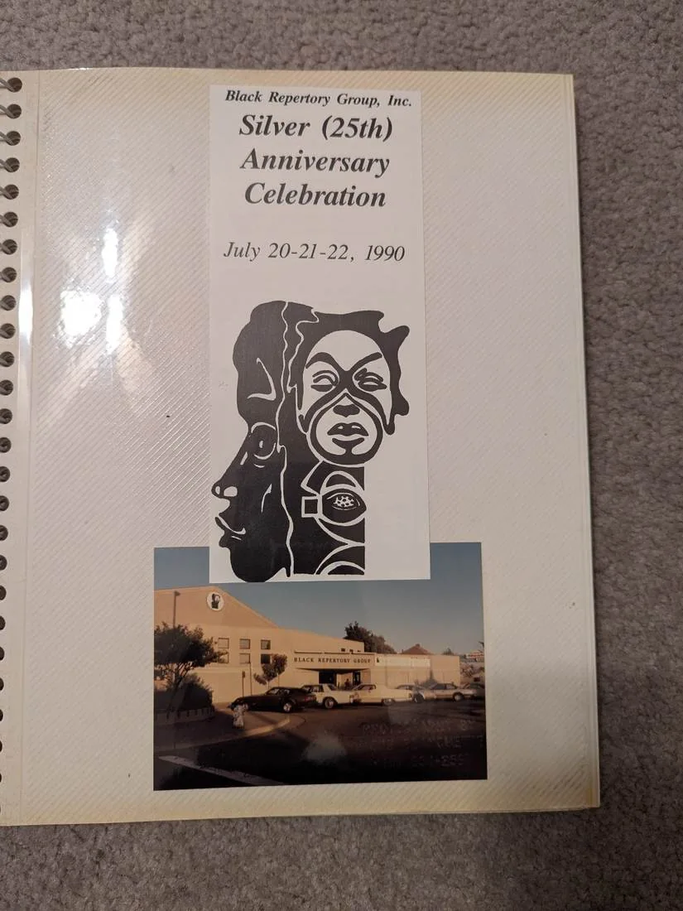

No photographs match these filters.
Collection gallery
Photographic gallery
Browse the tiled gallery, search the records or open a photograph to move through a slideshow.
← Back to collectionsAlbum documentation · 1990 title page

The album’s opening page identifies the occasion as the Black Repertory Group’s Silver (25th) Anniversary Celebration and prints the dates July 20–22, 1990. These are celebration dates, not independently established exposure dates for the photographs.
Documentary album page · creator not established · preliminary non-generative reproduction. Open larger image ↗